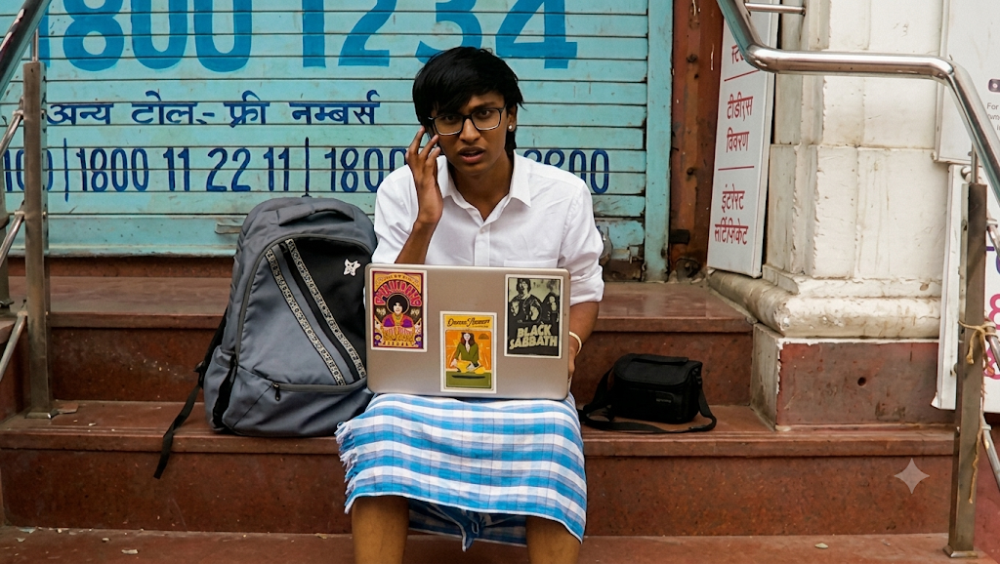
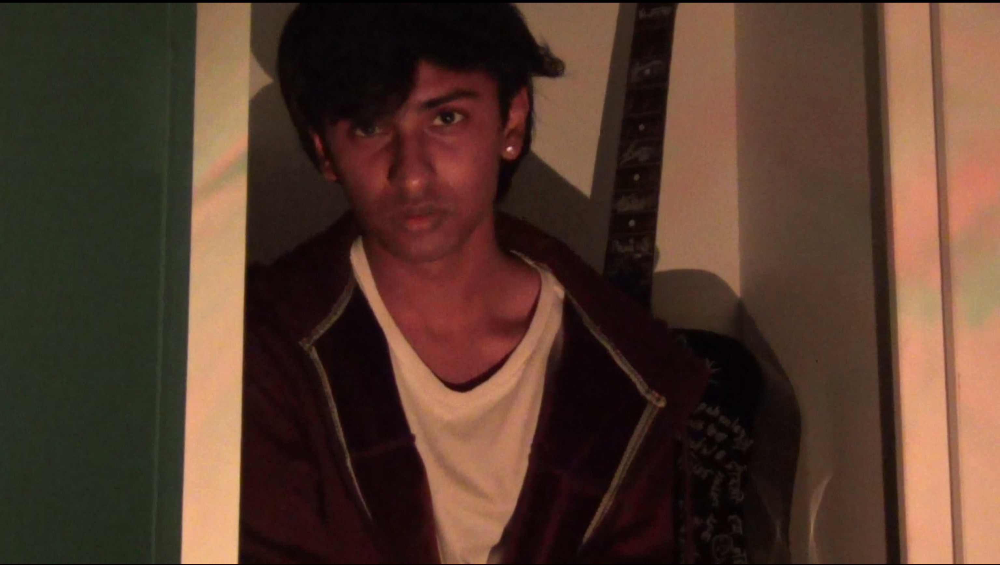

India Film Project — 50 Hour Filmmaking Challenge
Team Leader, 2025. Led a team to script, shoot, edit, and submit a short film within the 50-hour limit, from a theme released at the start of the challenge.

Building stories through film, sound, and stage.
I'm a first-year BBA-DBE student at IIM Bangalore who builds stories through short films, video editing, and live student events. I'm really interested in the media industry — I love playing the guitar, making short films, and managing events, from campus film shoots to large student gatherings.

Team Leader, 2025. Led a team to script, shoot, edit, and submit a short film within the 50-hour limit, from a theme released at the start of the challenge.
Core Team Member. Part of the organising team managing roughly 110 delegates from across central India.
Team Leader, 2024. Led the school's team on the project "Annrakshan".
Lead Guitarist, 2025. Performed at the IPSC Music Fest.
BBA student in Digital Business and Entrepreneurship at the Indian Institute of Management Bangalore. Experienced in filmmaking, video editing, event management, and public speaking, with a track record of leading student teams and organising youth events.
BBA, Digital Business & Entrepreneurship — IIM Bangalore (currently pursuing)
The Emerald Heights International School, Indore (2010–2025)
India Film Project, 50 Hour Filmmaking Challenge (2025) — Team Leader
Indore Youth Assembly — Core Team Member
Commerce Bal Vigyan Team, EHIS (2024) — Team Leader, project "Annrakshan"
EHIS Rock Band (2025) — Lead Guitarist, IPSC Music Fest
MUN Club — Best Presentation & Special Mention
Drama Club (Rangmanch) — 2nd place, intra-school skit
Quill Club — Columbia Symposium
International Exchange Club — hosted a student via AFS
International University Fairs — logistics & anchoring
Porwal Youth Club — community meal service
Filmmaking & Video Editing, Content Creation, Public Speaking & Event Anchoring, Communication, Community Building, Event Management & Logistics, Team Leadership